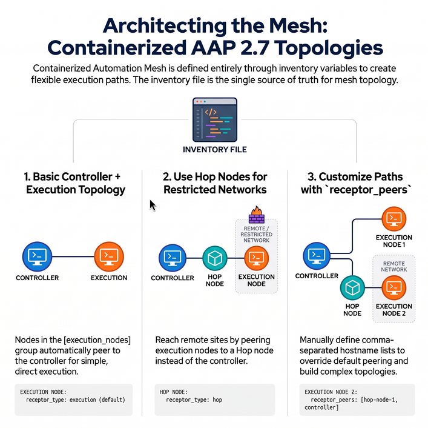

Automation Mesh Examples for Containerized Deployment
Let’s take a closer look at Automation Mesh topology examples in a containerized AAP 2.7 installation. Mesh configuration is done entirely in the installer inventory file using receptor_type and receptor_peers.
In containerized deployments, replace node_type with receptor_type. The values are the same: execution (default) and hop.
|

Example 1: Basic Controller + Execution Node
A minimal containerized deployment with one controller (acting as hybrid) and one execution node.
[automationgateway]
aap-gateway.example.com
[automationcontroller]
aap-controller.example.com
[execution_nodes]
aap-execution.example.com
[automationhub]
[automationeda]
[database]
aap-database.example.com
[all:vars]
postgresql_admin_username=postgres
postgresql_admin_password=redhat
bundle_install=true
bundle_dir='{{ lookup("ansible.builtin.env", "PWD") }}/bundle'
redis_mode=standalone
gateway_admin_password=redhat
gateway_pg_host=aap-database.example.com
gateway_pg_password=redhat
controller_admin_password=redhat
controller_pg_host=aap-database.example.com
controller_pg_password=redhatIn this configuration, nodes in [execution_nodes] are automatically peered to nodes in [automationcontroller]. The controller acts as a hybrid node by default.
Example 2: Controller + Hop Node + Execution Node
A more advanced topology where an execution node in a remote or restricted network is reached via a hop node.
[automationgateway]
aap-gateway.example.com
[automationcontroller]
aap-controller.example.com
[execution_nodes]
aap-hop.example.com receptor_type=hop
aap-execution-remote.example.com receptor_peers=aap-hop.example.com
[automationhub]
[automationeda]
[database]
aap-database.example.com
[all:vars]
postgresql_admin_username=postgres
postgresql_admin_password=redhat
bundle_install=true
bundle_dir='{{ lookup("ansible.builtin.env", "PWD") }}/bundle'
redis_mode=standalone
gateway_admin_password=redhat
gateway_pg_host=aap-database.example.com
gateway_pg_password=redhat
controller_admin_password=redhat
controller_pg_host=aap-database.example.com
controller_pg_password=redhatHere, aap-hop.example.com is configured as a hop node (receptor_type=hop). The remote execution node aap-execution-remote.example.com peers to the hop node using receptor_peers. The hop node itself is automatically peered to the controller.
The concept behind Execution and Hop nodes is the same as in an RPM deployment, but the configuration uses receptor_type instead of node_type, and receptor_peers (a comma-separated hostname list) instead of peers.
|
Example 3: Multiple Execution Nodes with Separate Peering
[automationcontroller]
aap-controller.example.com
[execution_nodes]
aap-hop.example.com receptor_type=hop
aap-execution1.example.com
aap-execution2.example.com receptor_peers=aap-hop.example.comIn this example:
-
aap-execution1.example.compeers directly to the controller (default behavior). -
aap-execution2.example.compeers to the hop node, which routes traffic back to the controller. -
aap-hop.example.comis automatically peered to[automationcontroller].
For more information on design patterns refer to Automation mesh for containerized and VM environments.